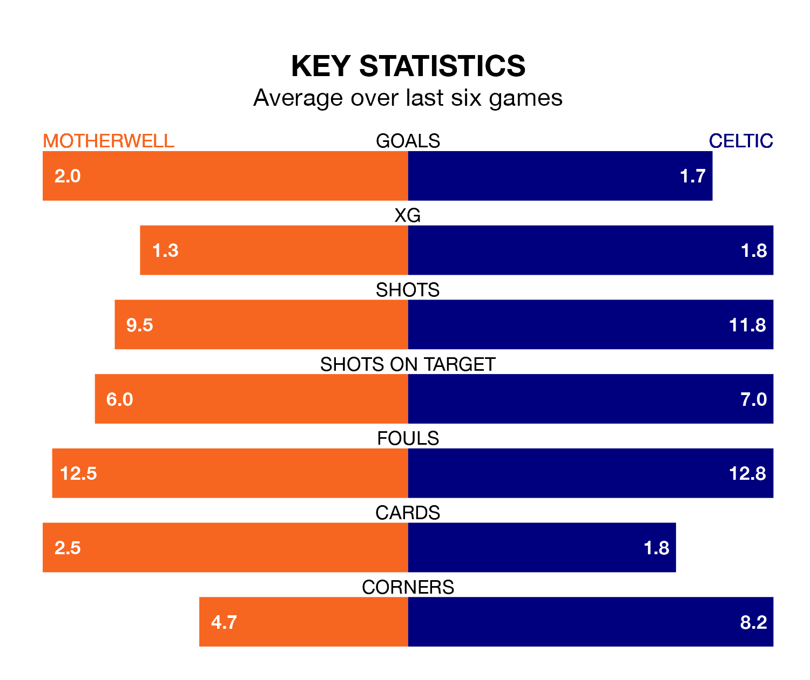

Relegation candidates Motherwell face a challenge against high-flying Celtic at Fir Park on Sunday.
Motherwell are ninth in the Premiership table, and have picked up five wins and 11 draws in their 26 games to date.
The Bhoys, meanwhile, are second in the standings with 62 points, having won 19 and drawn five, and are two points behind table-toppers Rangers.
With 58 goals in 26 games so far this season, Celtic are the league's highest scorers with 2.2 goals per game. And they are conceding fewer than average, letting in 18 goals at a rate of 0.7 per game.
Motherwell, meanwhile, are average scorers, with 1.3 goals per game. They have conceded 1.6 goals per game.
In the last 10 years, Motherwell and Celtic have played each other on 35 occasions. Motherwell won one of them, Celtic 27, and they drew seven times.
On average, Motherwell scored 0.7 goals and the Bhoys 2.7 in those matches.
Their last meeting was on November 25, when they played out a 1-1 draw.
In Joe Hart, the Bhoys can rely on one of the league's safest pair of hands. He has kept 11 clean sheets in his 25 appearances this season, and only two other 'keepers – Rangers's Jack Butland and Hearts's Zander Clark – have been able to prevent the opposition scoring on more occasions in the Premiership.
In the hosts' net, Liam Kelly has three clean sheets in 26 games. He has conceded a goal every 63 minutes, more than twice as often as the 156 minutes between goals for Hart.
Motherwell are in mixed form in the Premiership, with one win and four draws from their last six games.
With four wins and two draws over that period, the away team's form is much better – they have taken 14 points from 18, compared to Motherwell's seven.
Motherwell's last match was on February 17, a 2-0 loss against Hearts.
Celtic drew 1-1 with Kilmarnock last time out, also on February 17, with Kyogo Furuhashi on the scoresheet.
Sunday's match will be refereed by William Collum, who has taken charge of 12 Premiership games so far this season, issuing one red card and booking 37 players. He has awarded four penalties.
The last Motherwell game Collum refereed was a 2-1 home loss to Celtic on September 30. His last Celtic match was their 6-0 win at home against Aberdeen on November 12.
Updated: 10:08 (UTC), 23/02/24